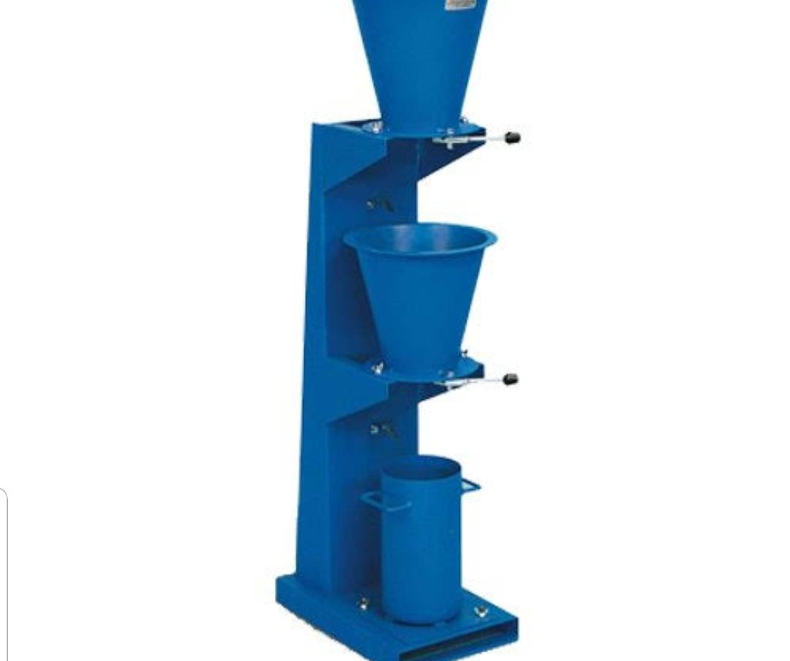

The 5 stages of concreting
July 5, 2018Batemans Bay Concreting, Bega Concreting, Moruya Concreting, Narooma Concreting, South Coast Concrete
While no job is the same, the process involved for quality concreting work is – just like our quality customer service and exceptional attention to detail when you work with Moruya Concreting.
After we assess the site and provide you with an obligation free quote, we take the necessary steps to prepare the area to be concreted. Sometimes this will require a little excavation, flattening, or holes dug out for piers. Depending on the work, it will usually require a combination of formwork (timber that forms the shape of the area to be concreted), waterproofing membrane (a plastic sheet that shields the concrete from the moisture of the soil), reo bar or mesh, and styrofoam blocks that help the concrete form a stable, structural lattice.
Once the preparations are done for pouring, we proceed with the following
Batching
We go through the process of measuring different concrete materials. These include cement, course aggregate (blue stone, etc), sand and water. This process is known as batching and it can vary from job to job.
Mixing
In the mixing process, the selected materials are mixed thoroughly to the required proportions. It’s done until the resultant concrete paste has a uniform consistency and colour.
Transporting
Once the mixing process is complete, the concrete is transported to your site. In the truck, the concrete is kept at the correct wetness and continually rotates to prevent it setting. At the site, the concrete is either poured directly into the formwork, transported by wheelbarrows or pumped up via large cranes and concrete hoses to get it into tricky locations.
Compaction & Levelling
Once the concrete has been evenly distributed into the formwork, the process of compaction begins. The aim is to eliminate air bubbles to increate the strength of the concrete. Screeding is then done, which is essentially a levelling process using large, straight edges that scrape across and flatten the surface. It is at this point, the desired concrete finishing effect can be applied.

Curing
We then keep the concrete at an optimum moisture level for a certain time period, depending on the atmospheric conditions. This is required to complete the hydration process of the concrete, resulting in a high quality and long lasting concrete job.
If you have a concreting job as part of a home build, landscaping or renovation anywhere between Batemans Bay, Narooma to Bega, we’re happy to help out. Just give us a ring! As a trusted, local business known throughout the South Coast, we’re here to ensure that you receive nothing but the very best results.